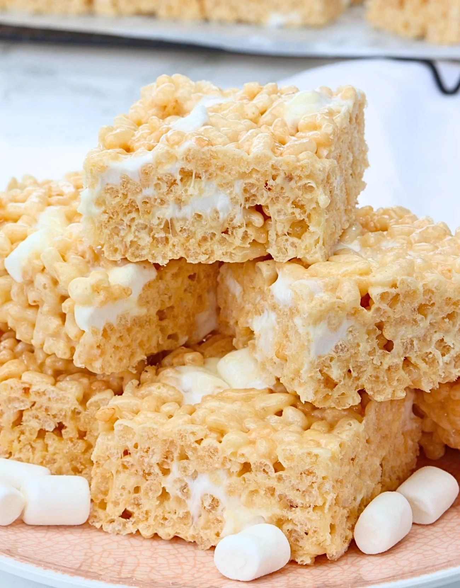

Rice Krispie Treats

Description
No bake required for these bad boys, the effort per taste ratio is one of the highest.
Ingredients
- 1.5 sticks butter
- 20oz mini marshmallows
- 0.5tsp vanilla extract
- pinch o salt
- 9c crispy rice cereal
Steps
- Line a 9x13 baking pan with parchment paper. Lightly oil it.
- In a large pot, melt butter over medium heat. Once melted add marshmallows and stir completely until melted.
- Remove from heat. Stir in vanilla extract and salt. Fold in cereal now, a little at a time.
- Transfer to pan, pressing down gently. Allow an hour cooling before eating.
home